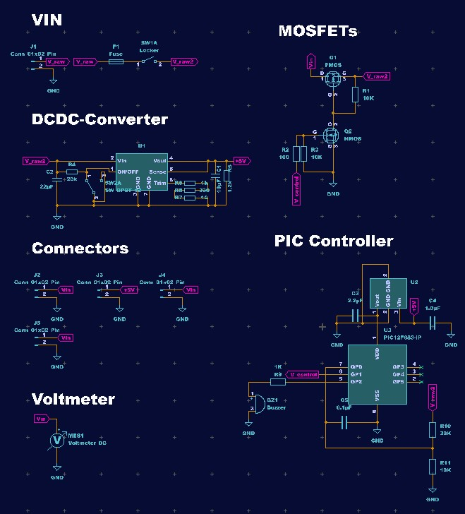

TOINIOT² Blog
基板、きちゃ!
2024-03-18 Writer: トキ
こんにちは！今回は電源基板のことについてのお話です。
電源基板は人体に例えるなら心臓のようなものでロボットにはなくてはならない大切なものです。
そのような大事な基盤を毎度お馴染みJLCPCB様(以下敬称略)に製造して頂きました。
では一旦JLCPCBについてお話させて頂きます。
JLCPCBは主に基板製作を手掛けている会社ですが3Dプリント、CNC加工なども行っているため様々なニーズに答えてくれます。
そしてなんといっても一番私達にとって嬉しいのはJLCPCBの作る製品は安く正確でしかもそれを早く提供してくれるところです。
私達が参加しているRCJでは場所により差はありますがノード大会、ブロック大会、全国大会これらすべてが約3ヶ月で開催されます。
各大会を経て弱点などをみつけ、より良いものに改良していくわけですが大会間の間隔は決して広いとは言えず時間との勝負になります。
JLCPCBはそんな私たちにとっては強力な味方とも言えるでしょう。
私達の要望にすぐに応えてくれる上、想像以上に高品質な製品を届けてくれます。
私達はこれまで数多くの基盤を発注しましたが未だにJLPCBC産の不良品にはあたったことがありません。
JLCPCBではなんと新規ユーザーに60$の無料クーポンを配布しています。
この機会に使ってみては如何でしょうか、JLCPCBがいかに優れた会社なのか実感できると思いますよ。

↓JLCPCB様のHP
https://jlcpcb.com/
↓クーポンゲットのチャンス！
https://jlcpcb.com/JPV
さてここから電源基板に関するお話です。
私達のチームではLi-Fe充電池を使用しています。
これは小型で軽量と重量制限にかなり気をつけなければいけない私達にはぴったりな電池でしたが
へたをすると発火するなど、対策をしておかなければいけない危険な電池でもあります。
私達は電源基板に保護回路を組み込むことによって安全性を確立しています。
Li-Fe充電池は過充電、過放電を行ったとき発火の危険性が高まってしまいます。
なのでそれを防ぐため、保護回路によって電池の電圧を常に確認しその値がしきい値を一定秒数下回るまたは上回ることを条件にシャットダウン回路が作動し電池からの電圧をすぐに遮断します。

今回はこれで以上となります。
最後まで見てくださりありがとうございました。
他にも記事書いているのでそちらも見ていただけると嬉しいです。